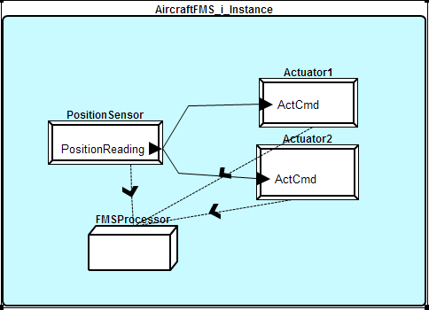
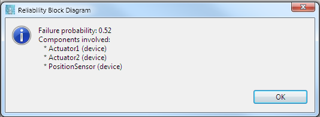

A Reliability Block Diagram (RDB) is a simple representation of a system with reliability/safety-related information. You can learn more about this representation on wikipedia. While being first a graphical representation, the RDB is also helpful to have a first gross estimation of the error probability.
To do so, you have to associate an occurence value for each potential error/fault. In AADL terms, it consists in assigning an OccurrenceDistribution property to an error model artifact (see example below). Also, in AADL, the RDB is specified with an error composite behavior specification that details the dependence between each state. In the example below, the main system is Operational if:
The following example is composed of three devices: a sensor and two actuators. The system is operational as long as a sensor is operational and at least one actuator is operational. All devices are associated to the same processor. The following picture show the graphical instance model.
Then, using the RDB function from the tool framework, we can compute metrics that show the probability of having (or not) failures. The following figure show the result of our plug-in on the following example (see below). The result show the metrics but also which components are used to produce this metrics so that the user can also check that all components are correctly being processed.
The following AADL textual model gives an overview of the definition of the main system instance.
system implementation AircraftFMS.i
subcomponents
PositionSensor: device sensor;
Actuator1: device Actuator ;
Actuator2: device actuator ;
FMSProcessor: processor ppc;
connections
sensedPosition: port PositionSensor.PositionReading
-> Actuator1.ActCmd;
Actuator2Cmd: port PositionSensor.PositionReading
-> Actuator2.ActCmd;
properties
Actual_Processor_Binding =>
(reference (FMSProcessor))
applies to PositionSensor;
Actual_Processor_Binding =>
(reference (FMSProcessor))
applies to Actuator1;
Actual_Processor_Binding =>
(reference (FMSProcessor))
applies to Actuator2;
annex EMV2 {**
use behavior ErrorModelLibrary::Simple;
composite error behavior
states
[PositionSensor.Operational and (Actuator1.Operational or Actuator2.Operational)]-> Operational;
[Actuator1.Failed and Actuator2.Failed]-> Failed;
[PositionSensor.Failed]-> Failed;
end composite;
properties
EMV2::OccurrenceDistribution => [ ProbabilityValue => 0.1 ; Distribution => Fixed;]
applies to Actuator2.Failed;
EMV2::OccurrenceDistribution => [ ProbabilityValue => 0.2 ; Distribution => Fixed;]
applies to Actuator1.Failed;
EMV2::OccurrenceDistribution => [ ProbabilityValue => 0.5 ; Distribution => Fixed;]
applies to PositionSensor.Failed;
EMV2::OccurrenceDistribution => [ ProbabilityValue => 0.3 ; Distribution => Fixed;]
applies to FMSProcessor.Failed;
**};
end AircraftFMS.i;